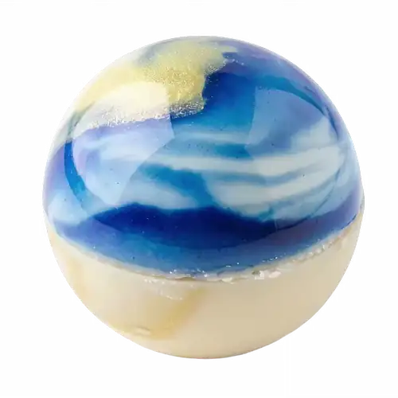

Casamentos
O primeiro doce que vocês dividem como casados merece ter a cara de vocês: as flores, o convite, as cores da festa.
Confeitaria autoral
Bombons, doces finos e bolos desenhados para o seu evento e feitos à mão, peça por peça, para casamentos, 15 anos, eventos corporativos e celebrações.
Casamentos · 15 anos · Corporativo · Celebrações
O detalhe faz a peça

Bombom de maracujá com manga e coco.
Um ateliê, não uma vitrine:
A gente pensa a cor, a forma e o sabor de cada peça como quem monta um painel de azulejos: cada parte no seu lugar, cada detalhe à mão. Nada sai de uma forma pronta. E tudo é conferido com calma antes de sair do ateliê.
com carinho, Marbot
Tem doce que a gente come.
E tem doce que a gente guarda na memória.
É para esse segundo tipo que a Marbot existe: a peça que aparece nas fotos, que os convidados comentam na mesa e que a família lembra anos depois da festa.
Os doces
Passe pelos doces e abra cada um para ver o que tem por dentro. Os sabores mudam com a estação e com cada evento.
Para quais momentos
Cada evento começa do zero: a peça nasce da sua história, não de um catálogo.
O primeiro doce que vocês dividem como casados merece ter a cara de vocês: as flores, o convite, as cores da festa.
Uma peça que conta quem ela é hoje, e que ela vai gostar de rever nas fotos daqui a muitos anos.
As cores e as formas da sua marca em bombons e doces, para presentear clientes e receber com cuidado.
Aniversários, batizados e encontros em família, com doces feitos para virar lembrança.
Quem já celebrou com a gente
[Depoimento real de um cliente, com autorização para publicar.]
[Depoimento real de um cliente, com autorização para publicar.]
[Depoimento real de um cliente, com autorização para publicar.]
Como funciona
Você conta pelo WhatsApp a data, o tipo de evento e o número de convidados.
Traga o convite, um tecido, uma flor ou as cores da festa. É daí que a peça nasce.
Montamos a proposta com o desenho das peças e os sabores. [Confirmar se há degustação.]
Produzimos tudo no ateliê e entregamos no dia. [Confirmar entrega e montagem.]
Atendemos Uberlândia e região · Cada peça é feita sob encomenda, então reserve sua data com antecedência.
Conte a data e a ideia. A gente responde pelo WhatsApp e começa pelo desenho.
Conversar pelo WhatsAppUberlândia e região · (34) 99335-7189